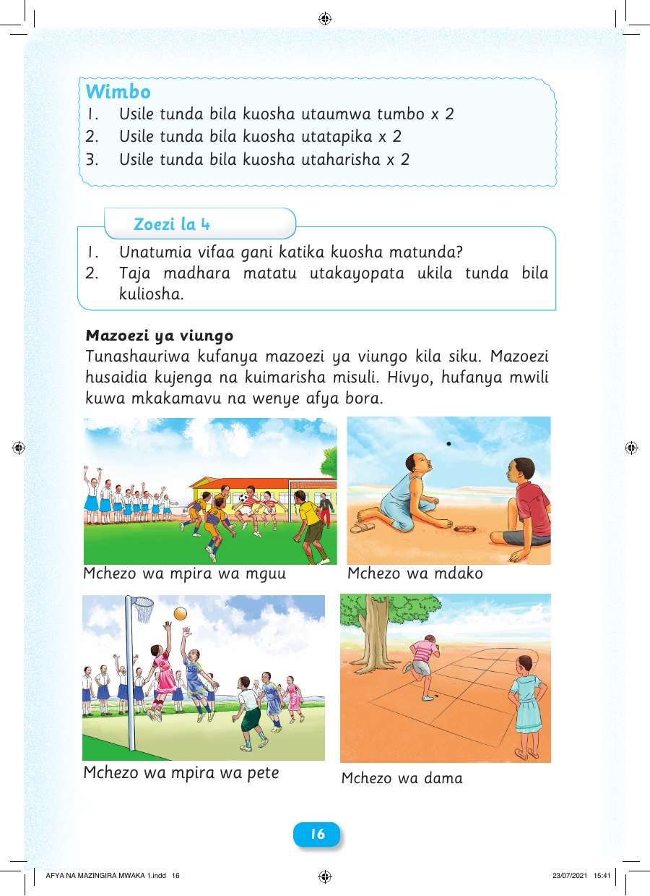

Wimbo 1. Usile tunda bila kuosha utaumwa tumbo x 2 2. Usile tunda bila kuosha utatapika x 2 3. Usile tunda bila kuosha utaharisha x 2 Zoezi la 4 1. Unatumia vifaa gani katika kuosha matunda? 2. Taja madhara matatu utakayopata ukila tunda bila kuliosha. Mazoezi ya viungo Tunashauriwa kufanya mazoezi ya viungo kila siku. Mazoezi husaidia kujenga na kuimarisha misuli. Hivyo, hufanya mwili kuwa mkakamavu na wenye afya bora. Mchezo wa mpira wa mguu Mchezo wa mdako Mchezo wa mpira wa pete Mchezo wa dama 16 AFYA NA MAZINGIRA MWAKA 1.indd 16 23/07/2021 15:41